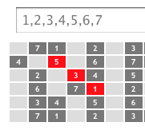
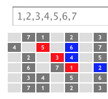

- 1. (optional) Pick a color
- 2. Click some numbered frets to define your first chord
- 3. Click Harmonize This! to see your chord harmonized across the major scale
UPDATE: Check out the wider and less preachy version
Q: What have we got here?
A: Some blocky looking guitar fretboards with numbers on certain frets. Pretend the strings are wide and blocky too! And, like a tire on the road, the numbered blocks are your finger's contact patch on the string. The topmost blocky string on these fretboards is the same as the high-pitched skinny string on a real guitar
Q: OK, that may take a second to get used to, but I'm starting to see it. So why 30 frets?
A: It's enough so you can see patterns repeat, and so you can doodle. Pretend these fretboards go on forever to the left and right. Patterns you learn will apply anywhere along the fretboard
Q: Did you say I can doodle?
A: Yes! go ahead and click on a fret right now. I'll explain the numbers in a minute
Q: It changed color! So does the color picker determine it?
A: That's right. Use the color picker when you need to mark the frets differently. Use different colors to learn different patterns
Q: And the numbers?
A: The numbers are degrees of the major scale (don't worry about what that is yet, you can Wikipedia it later), with 1 being the root note. You can change the sets of numbers in the text boxes. The fretboard will refresh once you tab out of the box
Q: What's a b3?
A: It's a flat 3rd, the note between degrees 2 and 3. You could also call it a sharp 2nd, or #2
Q: So the #5 is a sharp 5? The note between degrees 5 and 6?
A: You got it!
Q: So do you have any suggestions for my first doodle?
A: I do. A great way to build chords is to pick a starting degree, and then play every other degree. For example 1,3,5. Let's find those somewhere on a 1,2,3,4,5,6,7 fretboard and paint them red like so

Q: Got it. Now what?
A: That degree pattern can be walked up the scale to produce the next chord. Find the 2,4,6 to the right of your red 1,3,5 and make 2,4,6 blue like so

Q: OK, I get it. I bet you want me to repeat this again with 3,5,7 and with 4,6,1 and again with 5,7,2 etc until I hit 1,3,5 again?
A: Exactly. Use medium-dark shades of color for best results. Then grab a real guitar and start practicing these colored chords. These shapes will work on any fret you start on. Now, have you ever played Tetris?
Q: Wait a minute, A: is for answer, why are you asking questions? Yes I've played Tetris. Who hasn't?
A: And how many different Tetris shapes are there, 7? Here you've just learned how to play harmonized diatonic chords over the major scale, and you only needed to know 3 shapes
Q: Yeah I noticed that. 1,3,5 has the same shape as 4,6,1 and 5,7,2. 2,4,6 has the same shape as 3,5,7 and 6,1,3. And then there's that goofy 7,2,4. What is he, the Cooties of chords?
A: Easy now. He's actually got a name. He is called a diminished triad. The 1,3,5 pattern (also 4,6,1 and 5,7,2) is called a major triad. And the 2,4,6 pattern (also 3,5,7 and 6,1,3) is called a minor triad
Q: So, could I use the same patterns on other strings making other shapes?
A: Absolutely, the theory works all over the fretboard, even on other instruments! And don't be afraid to invert 1,3,5 to 3,5,1 or 5,1,3. The inversions will have new shapes and sounds which can also walk up the scale too. If you get tired of triads, try 1,3,5,7 and 2,4,6,1 using 4 notes at a time. It's best to first find a shape you can actually reach with your fingers, and then walk that shape up the scale.
Have fun with this page! And who knows, with a little practice you may find an alternative to Guitar Hero or Rock Band
My name is Chris Bratlien, and I write code (so you don't have to). My website is at CHRISBRATLIEN.COM